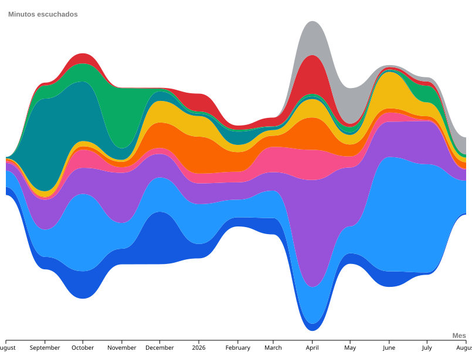

Mi librería de canciones
Análisis general de la biblioteca
Análisis de las métricas de la colección personal guardada en Spotify.
Métricas detalladas de reproducción y consumo real extraídas de mi historial de streaming.

